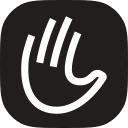

Colour
Neutrals
Surfaces
Floor
Whole sections
Card
Cards, plates
Type
Struve
Aa
ABCDEFGHIJKLMNOPQRSTUVWXYZ abcdefghijklmnopqrstuvwxyz 0123456789 →·%&?!
Every conversation400 · Regular
Every conversation500 · Medium
Every conversation600 · Semibold
Supporting
JetBrains Mono · 500
Live · 3 786 heard today
Labels only: 11–12, uppercase, 6% tracking.
IBM Plex Sans Arabic · 400–600
كل محادثة مهمة
Arabic only.
Logo and icon
Logo · 27 px
Mark · 24 px
On lime · ink
Ink on lime and light grounds. White on Primary Dark and ink.
Flat · ink

3D · lime
1024 × 1024 with alpha. Lime frosted glass on #9CDE45, a porcelain palm.
Shape
Solid: our squircle. Dashes: a plain 24% corner. Ours turns with no kink.